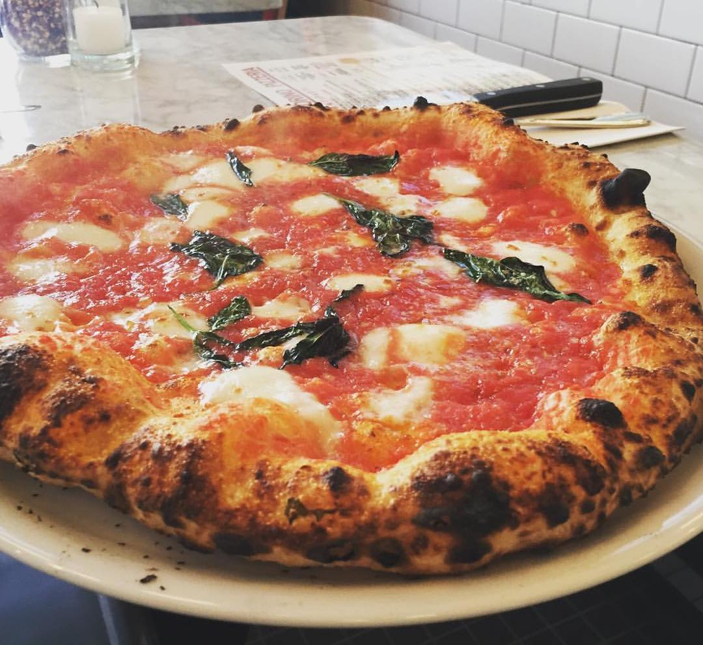

Pizza

Pizza is a dish that serves as a memento of the homeland of many Italian immigrants.
This circle-shaped dish traditionally consists of a baked flat-bread with toppings
including tomato sauce, cheese.
Nowadays, you can find practically anything on a pizza. Some put pineapples on their pizza, other's may
anchovies. Some even go as far as making 'dessert pizzas' which seek to forsake the savory origins
of the dish in favor of sweeter possibilities. The versatility of pizza is immense and growing.
Ingredients for a common Cheese Pizza
-
Dough
- flour
- water
- yeast
- olive oil
-
Sauce
- San Marzano tomatoes
- olive oil
- onions
- garlic
- tomato paste
- sugar
- salt
-
Toppings
Steps to make a common Cheese Pizza
- Mix flour, yeast, oil and water to form dough
- Knead the dough until it stops being sticky
- Place dough in an oiled bowl and let the dough rise for 3 hours
- Cook tomatoes, olive oil, onions,garlic, and tomato paste in a pot
- Add salt and sugar to taste
- Get risen dough and roll it out into a circular shape
- Spread a thin layer of tomato sauce to cover dough
- Sprinkle Mozzarella cheese evenly across the dough
- Bake at 450 degrees for 6 minutes, rotating the pizza 180 degrees halfway
- Slice into the pizza and serve
Back to Recipe List